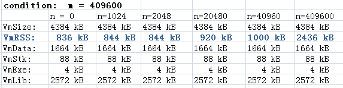

Linux内存泄漏查询方法proc/status解释
|
在测试，特别是性能测试或者系统的稳定性测试中，内存的使用情况是一个很重要的监控点，不管是从资源使用的角度还是从发现内存泄露问题的角度。
如果笼统的来看，大概就是两个指标，系统的内存使用率和进程使用的内存。但是现实世界的事情往往没有那么简单，稍微细一点来看其实有很多的科目。本文不是一个全面的关于内存使用的探讨，甚至也不是一个详细的Linux下面进程内存使用情况的分析，尽管这里的实践是基于此的。 这里想做的是稍微细节一点的来看Linux下一个进程的内存使用情况，包括栈和堆。 首先我们从一个简单的C程序开始。且慢，先说一下我试验的环境。 platform: CentOS release 5.6 (Final) Linux localhost.localdomain 2.6.18-238.19.1.el5xen #1 SMP Fri Jul 15 08:57:45 EDT 2011 i686 i686 i386 GNU/Linux gcc version 4.1.2 20080704 (Red Hat 4.1.2-50) [root@localhost test]# cat simple_hello.c #include <stdio.h> int main() { int i,m = 1024, n = 0, x; int a[m]; printf("assign %d values to a[%d]...\n", n, m); for (i = 0; i < n; i++) { a[i] = 100; } printf("value assigned.\n"); scanf("%d", &x); /* to hold program.. */ return 0; } 真是一个很简单的程序，只比hello world复杂一点点。创建一个静态的数组，长度通过m来控制，然后选择性的给部分或者全部的元素赋值，通过n来控制。好吧，这个一个简单的程序能看出什么呢？那我们一起来看看。 在Linux下面，查看一个进程的内存使用我们可以下面的命令来实现，只需把其中的[pid]换成进程实际的pid。 # cat /proc/[pid]/status 为了方便，我们把查找pid和看内存整合成一条命令，后面这将是我们唯一的测试工具。 cat /proc/`ps -ef|grep hello | grep -v grep | awk '{print $2}'`/status | grep -E 'VmSize|VmRSS|VmData|VmStk|VmExe|VmLib' 在这里我们关注VmSize|VmRSS|VmData|VmStk|VmExe|VmLib 这个6个指标，下面有一些简单的解释。 VmSize(KB) ：虚拟内存大小。整个进程使用虚拟内存大小，是VmLib, VmExe, VmData, 和 VmStk的总和。 VmRSS(KB)：虚拟内存驻留集合大小。这是驻留在物理内存的一部分。它没有交换到硬盘。它包括代码，数据和栈。 VmData(KB)： 程序数据段的大小（所占虚拟内存的大小），堆使用的虚拟内存。 VmStk(KB)： 任务在用户态的栈的大小，栈使用的虚拟内存 VmExe(KB)： 程序所拥有的可执行虚拟内存的大小，代码段，不包括任务使用的库 VmLib(KB) ：被映像到任务的虚拟内存空间的库的大小 Ok, 测试开始了。 首先，我们固定m的值为409600，相当于400K，因为数组的元素是int型，在我的环境里面是4Byte，所以真个数组的大小为1600KB。 m固定化，我们不断调整n的大小，重写编译，执行，然后用上面的命令查看内存的使用情况，这样我们得到了下面这个表格。 从这里我们可以得到几个信息： 1. 静态的数组使用的空间被分配到VmStk，也就是栈区。 2. 在数组没有初始化的时候并没有实际占用虚拟内存，看VmRss，但是整个虚拟内存的大小还是分配了，VmSize。 接下来我们做另一个测试，让n=m，调整m的大小，也就是说调整数组的大小，然后初始化所有的元素。 这样我们得到了下面的表。 从这个表中，我们可以看出： 1. 栈的使用确实和数组的size相关，但是有个起始预分配的大小，应该是编译器的优化。 2. VmRSS和VmSize跟着一起在涨。 嗯，是跟着在涨，但是有个问题，栈的空间是有限的，通过这个程序或者你查看系统的设置你可以找到上限。在我的这台机器上上限是8MB，每个进程，所以这里如果m的值大于2048000，就会出segmentation fault的错误。当然你也可以调整系统的设置，比如通过 # ulimit -s 10240将上限调为10MB。但是这个终究不能调得很大，因为对系统会有影响。所以编程中太大的静态数组不是有个好主意。 栈的大小限制还是蛮严格的，好吧，那我们来看看程序可以使用的另一类存储空间，堆（heap）。关于堆和栈的区别可能是一个常被问道的问题，你在很多地方可以找到答案。 OK，我们继续我们的实验，考虑到现在很多系统的后台用C++来写，我们也把测试程序换成C++的。好吧，我承认其实没有太大的区别，只是申请内存的方式不太一样了。 [root@localhost test]# cat hello.cpp #include <iostream> using namespace std; int main() { cout<<"New some space for array, assign value"<<endl; intm = 409600, n = 409600; int *p = new int[m]; for (int i = 0; i < n; i++) { p[i] = 100; } cout<<"value assigned."<<endl; int x; cin>>x; //hold program } 这个我们使用的是动态的数组，也就是说数组的内容空间是我们显式的通过new通过向系统申请的。测试工具还是上面的命令行。 延迟我们的风格，首先固定m的值，这里是409600，400K，然后调整n的值，看情况是怎样的。
 一些观察的结果： 1. VmData的大小约为1600KB，因为每个元素4Byte，系统还有一些别的使用。 2. n控制有多少数组的元素被初始化，这也影响了VmRSS的大小。 整个VmSize的大小并不受初始化范围的影响，这个结果和之前栈的实验中看到的现象很类似，只不过这里换成了VmData。 接下来我们让n=m，然后两个一起调整。
可以看出: 1. VmData的size在增长，VmRSS也在跟着一起增长。但是VmRSS一开始分配的余量就比较大，所以VmData刚开始的增长并未立即导致VmSize的改变。 2. VmSize也跟着一起增长，应该的。 请注意这里发生了一些很奇怪的现象，那就是当m=40960的时候，你会发现VmData的值比m=20480的时候还要小，很不正常。 实验了很多次，我发现在一个特定的区间里面VmData并未按照m的值增长，而且下降了，然后又开始增长。和同事一起check了一下，目前的解释是装载程序做了一些tricky的事情，也可能是某种优化，具体的还不是很清楚。 在实际的产品代码，特别是后台的Linux服务器程序中，通常会大量的申请和释放内存，动态的，使用的就是我们这里提到的VmData，堆上的内存。Ok，你知道了，我要说的是memory leak的问题。通过观察VmData和VmRSS，我们能够很明确的察觉内存泄露的问题。
嗯，这个部分其实就涉及到操作系统的内存管理的策略和方法，是个很大的问题，推荐看一下《深入理解计算机系统》相关的章节或者关于现代的操作系统的书籍。这里我们简单做了一下实验。 我的实验机器的内存是1GB，一个Linux的虚拟机。 当我们设置 m = n = 204800000的时候，相当于要申请800MB的内存。 我们产品status的时候发现VmData > VmRSS, 这在前面m=n的情况下从来没有出现过。 VmSize: 802784 kB VmLck: 0 kB VmHWM: 684384 kB VmRSS: 676808 kB VmData: 800064 kB 所以一定是有些事情发生变化了。于是我们看了一下系统的内存，以及SWAP的使用情况。 Mem: 900096k total, 893180k used, 6916k free, 1012k buffers Swap: 2096472k total, 147320k used, 1949152k free, 33012k cached 发现系统的物理内存已经快用了，还留了一些给系统，然后开始使用SWAP了，大家知道这里的SWAP其实是磁盘文件。 在这种情况下，我们也许可以更容易理解驻留内存的意义，以及为什么内存不够会导致性能的明显下降。 如果进一步把m=n加到300M，也是申请1.2GB的内存（已经大于所有物理内存的数目），可能会更明显。 VmSize: 1202784 kB VmLck: 0 kB VmHWM: 814064 kB VmRSS: 793588 kB VmData: 1200064 kB Mem: 900096k total, 894128k used, 5968k free, 1104k buffers Swap: 2096472k total, 541812k used, 1554660k free, 13616k cached 通过这几个小的例子，会发现就是内存使用这样一个指标其实背后都会有很多值得去了解和探讨的细节，其实这里谈到的也只是冰山一角。只有了解并理解了这些重要的细节，我们在测试中去评估我们的产品的时候才会更加的准备，更容易发现和定位问题。另外不要忘记实际中的产品比这两个豆腐块程序要复杂得多。
|
|
|